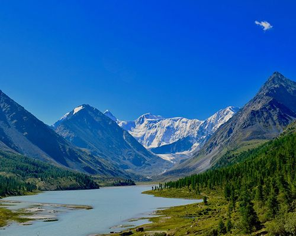
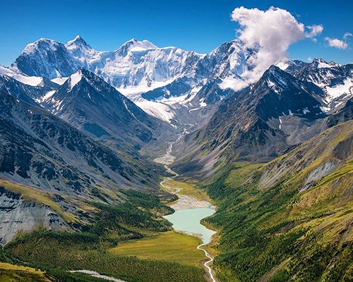
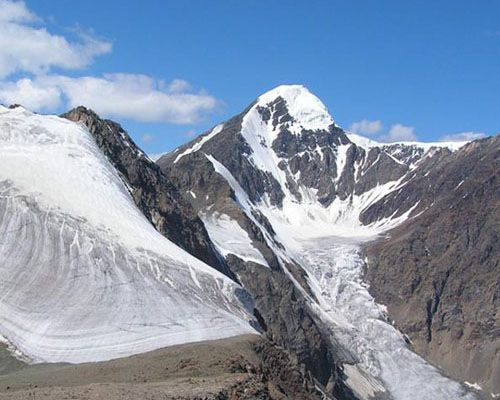
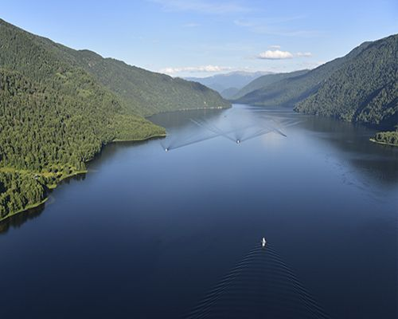
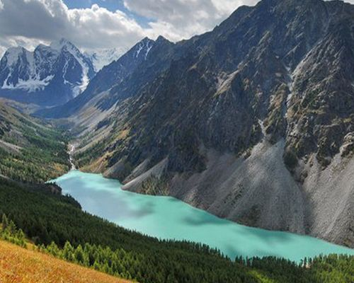
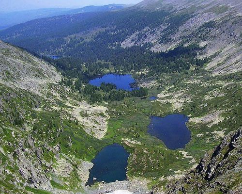
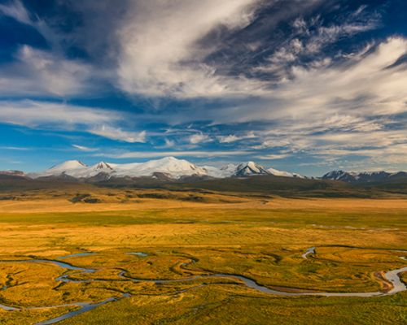
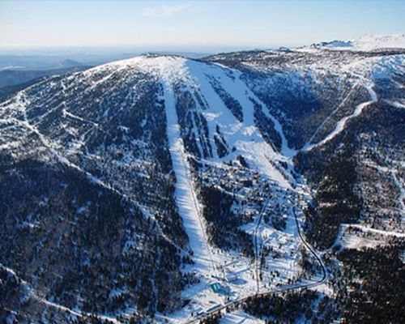
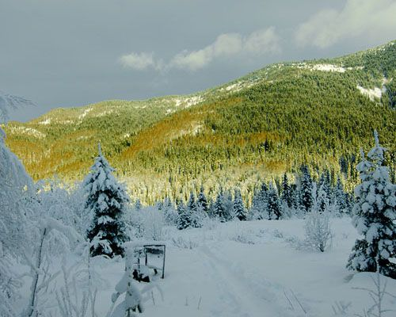

Экскурсии на вертолёте с Altay Village
Маршруты для гостей курорта Altay Village Телецкое.
Выберите маршрут
Цена «от» — за полёт на Eurocopter AS350 (до 5 пассажиров). Для групп доступны МИ-8АМТ и МИ-171.

⏱ 4ч 35минПолет на гору Белуха с посадкой на оз. Аккем
Белуха — пик Катунского хребта в Сибири, высота горы составляет — 4506 м.

⏱ 5чПолет на Белуху с посещением Музея Н.К. Рериха
Белуха — пик Катунского хребта в Сибири, высота горы составляет — 4506 м.

⏱ 4ч 10минПолет до горы Актру, центра альпинизма на Алтае
В горной цепи Северо-Чуйского хребта на высоте 2150 м, расположено ущелье Актру.

⏱ 3ч 20минВертолетный облет Телецкого озера и долины реки Чулышман
Это уникальная полетная экскурсия по акватории Телецкого озера — над водопадами, горными вершинами, многочисленными реками, впадающими в Алтын-Кёль.
 ⏱ 4ч 30мин
⏱ 4ч 30минПолет на Тальменное озеро
Озеро Тальмень — самое крупное в верховьях Катуни, расположено на высоте 1570 м, на южном склоне западной части Катунского хребта.

⏱ 5чШавлинские озера - Кызыл-Чин (Марс)
В 2017 году Шавлинские озера вошли в ТОП 5 самых красивых российских озер, согласно рейтингу Discovery Channel Russiа.

⏱ 2ч 35минПолет над каскадом Каракольских озер
Каскад Каракольских озер состоит из семи озер, расположенных на ступенях гигантской каровой лестницы, соединенных между собой притоком реки Каракол.

⏱ 5ч 30минПлато Укок
Укок — плоскогорье на крайнем юге Республики Алтай, на стыке государственных границ Казахстана, Китая, Монголии и России.

⏱ 3ч 20минШерегеш
Великолепный Массив Горная Шория, среди которых и раскинулся Шерегеш, находятся в Кемеровской области.

⏱ 2ч 15минГорячий (теплый) ключ
Термальный источник расположен в Республике Хакасия в горной местности Западного Саяна.